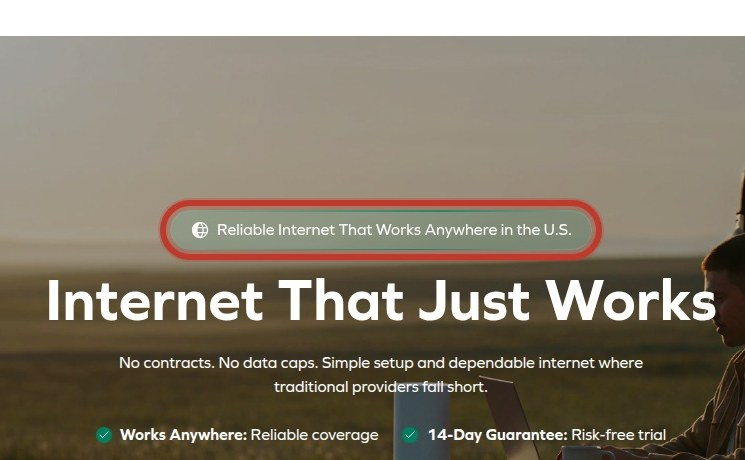

Before & After — click any card for evidence, math and the dev spec

1
Urgent
Slow Mobile LCP
The page's main content takes an excessive 46.4 seconds to appear on mobile, causing most visitors to bounce.
Medium effortMeasured
Full analysis →


2
High
Mobile Layout Shifts
Significant layout shifts during mobile page load cause mis-taps and a frustrating user experience.
Medium effortMeasured
Full analysis →

3
High
Mobile Main Thread Blocked
Excessive script execution freezes the main thread for 2,140 ms on mobile, making the page unresponsive during load.
Medium effortMeasured
Full analysis →

4
High
Heavy Third-Party Scripts
The homepage loads 65 scripts, which is the usual root cause of slow interaction readiness on mobile.
Medium effortMeasured
Full analysis →

5
High
Slow Blog LCP Mobile
Measured in a lab load on /blogs/countrynomad/content-delivery-network-cdn: the page's main content takes this long to appear on a mid-range
Medium effortMeasured
Full analysis →


6
High
Blog Mobile Layout Shifts
Measured in a lab load on /blogs/countrynomad/content-delivery-network-cdn: the layout jumps while loading, causing mis-taps on the very but
Medium effortMeasured
Full analysis →